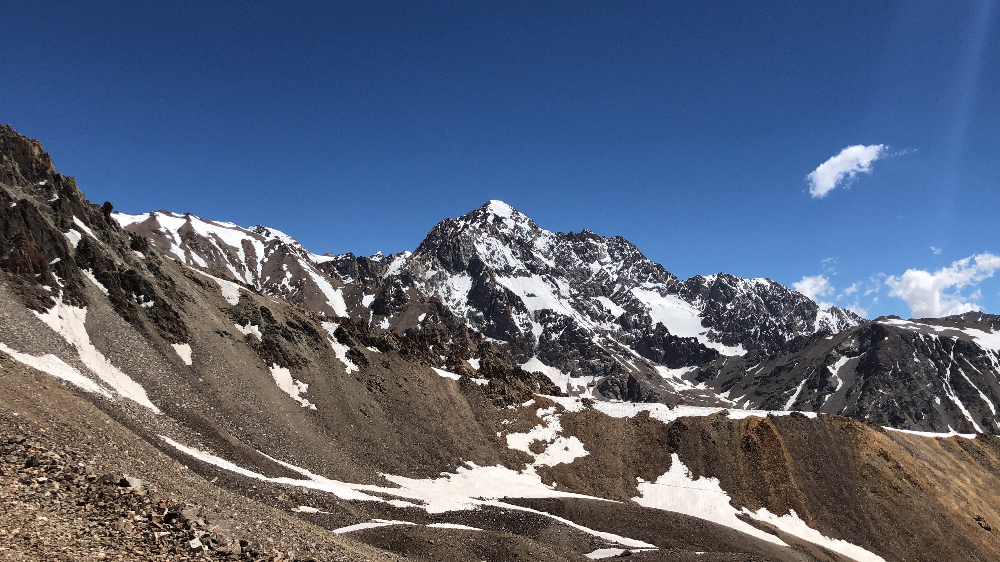

Reseña de la Campaña Sanmartiniana
En 1814 cuando San Martín ocupó el cargo de general en jefe del Ejército del Norte, advirtió que los intentos de terminar con la resistencia realista en el Perú por el Norte llevarían a una guerra de desgaste, lo cual diezmaría los pocos recursos económicos y humanos con los que contaba la Revolución. Entonces elaboró un plan para atacar y libertar Chile y Perú. Lima, corazón del poderío español en Sudamérica, el plan consistía en cruzar la cordillera de los Andes, para reforzar la revolución chilena y unir los recursos materiales y humanos del Río de la Plata y Chile, y luego navegar por el océano Pacífico en dirección al virreinato del Perú y acabar con la resistencia española en el sur del continente. Para ejecutar su plan, solicitó el cargo de Gobernador Intendente de Cuyo, jurisdicción que comprendía las provincias de Mendoza, San Juan y San Luis. El 9 de septiembre de 1814, San Martín llegaba a la ciudad de Mendoza con un objetivo muy claro: armar un ejército profesional bien pertrechado que le permitiera derrotar a los realistas y lograr definitivamente la independencia americana.
Para tal fin Buenos Aires le niega el apoyo, así como hombres y dinero. San Martin plantea una estrategia armar un ejército pequeño y bien disciplinado formados en Mendoza, para pasar a Chile y acabar allí con los Godos, para concluir también con la anarquía que reina. Aliando las fuerzas pasaremos por el mar a tomar Lima. Ese es el camino convénzase, hasta que no estemos en Lima la guerra no se acabará” (Carta de San Martín a Rodríguez Peña, del 22 de abril de 1814).
Ya siendo gobernador y con el apoyo incondicional del Cabildo de Mendoza, San Martín comenzó los preparativos de su campaña libertadora. El reclutamiento de soldados fue muy intenso. A principios de 1815, San Martín dispuso que todos los hombres que tuvieran entre 15 y 45 años de edad, debían alistarse en los cuerpos cívicos. Un año después, el 12 de enero de 1816, ante la necesidad de reclutar más hombres, dispuso que los amos de esclavos debían proporcionarle al gobierno todos aquellos que tuvieran entre 14 y 45 años y encargarse de proveerles de uniformes. Los esclavos eran los que mayormente trabajaban en las siembras, las estancias y las viñas. Para atenuar el impacto, el 13 de septiembre de 1816, el gobierno citó a todos los propietarios de esclavos y les anunció que el Estado los recompensaría económicamente en cuanto fuera posible, pero que sus esclavos serían liberados y pasarían a forma parte del Ejército Libertador.
San Martín requirió un campo de gran extensión cerca de la ciudad, que se convertiría en el Campamento del Plumerillo. Para el adiestramiento de los soldados, levanto los cuarteles con la mano de obra de los peones y voluntarios. Luego el aprovisionamiento de caballos y mulas, cueros (para envolverle los pies a los soldados), alimento para el ganado que llevarían a pie, monturas, carretas (para trasladar armamentos y municiones), yerba mate, papel, bolsas de lanilla (para municiones), tabaco, piedras pómez (para lustrar las armas y pulir el interior de los cañones), aguardiente (para disminuir el frío nocturno) y otros elementos. Y como antídoto del mal de las alturas que provocaba cefaleas, náuseas y trastornos del sueño, conocido entonces como la puna o el soroche, San Martín reunió miles de cebollas. El 28 de diciembre de 1816, San Martín dice: “la cebolla ha probado muy bien contra la puna. Ante la dificultad de reunir los recursos materiales necesarios para la campaña, el general, en su rol de gobernador, tomó medidas estableciendo nuevos oficios encomendados a los vecinos de Mendoza el objetivo de emplearlos para la elaboración de pólvora, las sequias, sembrado etc. San Martín necesitaba explotar al máximo los recursos locales, debido a que no podía esperar demasiado del poder central ubicado en Buenos Aires. Sin embargo, esta situación cambió a partir del 9 de julio de 1816, fecha en la que asumió Juan Martín de Pueyrredón como director supremo de las Provincias Unidas del Río de la Plata.
Cabe destacar que toda la comunidad mendocina se sumó a los preparativos de la campaña libertadora, cuando el ejército repartió en cada uno de los hogares millares de cortes de camisas y ropas destinadas a vestir a los soldados de los diferentes cuerpos para que fueran cosidas en el menor tiempo posible, Las mujeres cosieron incluso de noche, a la luz de las velas, a fin de poder cumplir con esta misión. Un grupo de damas mendocinas pidió una audiencia con José de San Martín, en la que le entregaron sus alhajas para la compra de armamento y le expresaron todo su apoyo. Además, Remedios de Escalada, esposa del general, junto a sus amigas cosió y bordó la bandera de los Andes. El bordado del sol, se realizó con las perlas de un collar de Remedios.

El 5 de enero de 1817 se realizó en Mendoza una gran ceremonia a la que acudió toda la población mendocina. Las calles estaban adornadas con arcos florales y colgaduras de colores, así como también los balcones y fachadas de los edificios de la plaza principal. Poco antes de las diez de la mañana, las bandas militares anunciaban la llegada de las tropas que venían desde el Campamento de El Plumerillo. El ejército penetró en la ciudad por la calle de la “Cañada”, actual Coronel Díaz. A la cabeza marchaba el general Soler y la Virgen del Carmen, elegida patrona y generala del Ejército de los Andes. Detrás de la imagen llevada en andas, desfilaban San Martín, el nuevo gobernador de Cuyo, Toribio Luzuriaga, los miembros del Cabildo, autoridades eclesiásticas y vecinos. Durante la ceremonia, se escuchaba la música de las bandas militares y las campanas de todas las iglesias. Cuando las tropas llegaron al altar levantado en la plaza, el canónigo Dr. José Lorenzo Guiraldes realizó una misa en la que bendijo el bastón de mando y la bandera bordada por las damas. El general en jefe entregó el bastón a la Virgen del Carmen y enarboló la bandera de los Andes. Luego, una salva de 21 cañonazos saludó a la gloriosa insignia. Después, San Martín se dirigió a sus soldados y con voz firme anunció: “Soldados: ésta es la primera bandera independiente que se bendice en América”. Y los soldados respondieron: “¡Viva la Patria!”. Y San Martín replicó: “Soldados: ¿Juráis sostenerla muriendo en su defensa como yo lo juro?”. Y en un grito unánime respondieron: “¡Lo juramos!”. Luego siguieron otros 25 cañonazos.
En los días siguientes, partieron las diferentes columnas del ejército andino. El 25 de enero de 1817, el general San Martín, dejó la ciudad junto a su estado mayor después de enviarle una nota de agradecimiento al Cabildo y despedirse de su esposa y de su hija Mercedes de tan solo 6 meses de edad. La ciudad quedó desierta tras la partida del Ejército, los familiares de los soldados acudieron a las iglesias a rogar a Dios por la vida de sus seres queridos.
Tras cruzar las cordilleras de los Andes libro las siguientes batallas, San Lorenzo, Maipú, Chacabuco y Cancha Rayada.
Batalla de San Lorenzo - 3 de febrero de 1813
Es tal vez, la batalla sanmartiniana que tenemos más presente, en buena parte gracias a la Marcha, en parte gracias a la leyenda de Juan Bautista Cabral, aquel “Soldado heroico”, al que se le atribuye haberle salvado la vida al General, antes que el enemigo lo matara con su bayoneta.
Como el ejército de José Rondeau había sitiado Montevideo, los españoles tenían que salir al mar para abastecerse. Solían arrancar desde Montevideo en dirección al Paraná, donde robaban ganado. Una expedición compuesta de once embarcaciones realistas que había salido de Montevideo fue seguida por tierra por el Regimiento de Granaderos a Caballo de San Martín, al frente de 125 hombres.
Las fuerzas de San Martín se adelantaron y esperaron a los realistas cerca de la posta de San Lorenzo, a 26 kilómetros al norte del Rosario. Allí existe el convento de San Carlos, donde encerró San Martín a sus granaderos para que los realistas no advirtieran su presencia. Cuando los españoles desembarcaron, los granaderos los persiguieron obligándolos a huir. Algunos se tiraron al río desde la barranca y murieron ahogados. En la persecución rodó el caballo de San Martín. Y entonces llegó un soldado realista, y entonces (dice la leyenda) llegó Cabral, y la vida.

Batalla de Chacabuco - 12 de febrero de 1817
Las columnas que habían cruzado los Andes por el camino de los Patos se reunieron con las que cruzaron por el camino de Uspallata. San Martín resolvió atacar en la madrugada del 12. Con el fin de emplear una táctica de pinzas por el frente y la retaguardia, se dividieron a los hombres disponibles en dos: una división al mando de Miguel Estanislao Soler debía atacar por el oeste. La otra, al mando de Bernardo O’Higgins, debía atacar por el este.
Fue una victoria resonante: los patriotas tuvieron 2 bajas y 120 heridos, los realistas sufrieron más de 600 bajas, la captura de 500 prisioneros, 1000 fusiles, 5 piezas de artillería, 1 bandera y muchas municiones. La recuperación de Chile de manos realistas quedó a un paso. Todavía faltaba la batalla de Maipú.

Batalla de Cancha Rayada - 19 de marzo de 1818
Fue la mayor derrota militar que tuvo San Martín. Por eso se la llamó, también, Desastre de Cancha Rayada.
El ejército aliado argentino-chileno, con una tropa de 8.000 hombres, perseguía a los realistas por la ciudad de Talca. En la noche del 18 de marzo de 1.818, mientras el ejército aliado acampaba para pasar la noche, los realistas cayeron de sorpresa sobre los aliados. El General Juan Gregorio de Las Heras pudo salvar su división de 3 000 hombres. San Martín logró movilizar a sus hombres hacia una posición en la cual las tropas patriotas respondían el fuego. Al final de la batalla, los patriotas lograron retirarse con 120 muertos, 300 heridos y 2000 dispersos. Los realistas sufrieron cerca de 200 muertos y heridos.
Batalla de Maipú - 5 de abril de 1818
La batalla de Maipú sucedió en el valle del Maipo, entre las fuerzas patriotas argentino-chilenas y las realistas, y prácticamente decidió la independencia de Chile. Se enfrentaron el ejército realista (de 5.300 hombres y 12 piezas de artillería), bajo las órdenes de Mariano Osorio, contra el ejército patriota (4.900 hombres y 21 piezas de artillería), al mando del general José de San Martín.
San Martín atacó el centro y la derecha de los españoles, mientras que Las Heras comandó el ataque desde otro cerro. El General realista Mariano Osorio, creyéndolo todo perdido se retiró a cambio de protección. Ordóñez nunca se resignó a perder la batalla, pero el bombardeo constante lo llevó a rendirse.
La batalla tuvo su propio momento místico: el famoso “abrazo de Maipú” entre San Martín y O’Higgins, en el que O’Higgins le dice a San Martín “¡Gloría al salvador de Chile!” y San Martín le respondió “General: Chile no olvidará al ilustre inválido que se presenta herido en el campo de batalla”. Los patriotas perdieron alrededor de 1.000 hombres entre muertos y heridos. Los españoles, en cambio, sufrieron más de 2.000 muertos y 2.400 prisioneros, y buena parte de su armamento.
Retorno a la patria el monumento
Según la tradición sanmartiniana el 29 de Enero de 1823, al pie del paso del Portillo (hoy manzano histórico – entonces cajón del Manzano) San Martín de regreso del Perú, luego de su histórico renunciamiento, habiendo partido de Chile a mediados de enero, se encontraba con el cadete del regimiento de granaderos a caballo, entonces Coronel Manuel Olazábal quien en conocimiento de la llegada de San Martín a Mendoza había salido a su encuentro para recibirlo, al bajar este, la cumbre de los Andes.
El monumento “Retorno a la Patria” (obra del escultor argentino Luis Perlotti, y que fuera erigido entre 1949 y 1950) recuerda aquel emotivo encuentro.
Por lo general los monumentos sirven como símbolo o recordatorio de las glorias o acciones pasadas de quienes son sus protagonistas, así pues, estamos acostumbrados a encontrarnos en distintas ciudades del mundo y en especial Argentina con la estatua ecuestre del Gral. San Martín con su uniforme, caballo de batalla y sable en mano como muestra de sus glorias militares, sus hazañas personales y epopeya trasandina. Sin embargo, el monumento enclavado al pie de los Andes, en el Manzano Histórico más allá de destacar los valores de solidaridad, amistad y humildad, representa un valor mucho más trascendente y necesario de rescatar en estos días y que es nada menos que el renunciamiento del Padre de la Patria.
Así como la estatua ecuestre que citamos anteriormente representa al San Martín victorioso luchando por un sueño: la Independencia de América, el Manzano Histórico trasunta al hombre que logra vencerse a sí mismo, aquel que renunciando a todo poder, honores y riquezas decide autoexcluirse voluntariamente de la vida pública consiente de que su obra ha terminado, pues al decir de sus propias palabras: “Presencie la declaración de la independencia de los Estados de Chile y del Perú, existe en mi poder el estandarte que trajo Pizarro para esclavizar el imperio de los Incas, y he dejado de ser un hombre público; he aquí recompensado con usuras diez años de revolución y guerra. Mis promesas para con los pueblos en que he hecho la guerra están cumplidas: hacer su independencia y dejar a su voluntad la elección de sus gobiernos... mi existencia misma la sacrificaría antes de echar una mancha sobre mi vida pública; que se pudiera interpretar por ambición... “
El hombre que había decidido la suerte de estados opulentos vuelve sin más afán y ambición que el de descansar en su ínsula cuyana luego de tantos años de penurias, sacrificios y desvelos. Mostrando de esta forma nuevamente el estoicismo de sus principios y la coherencia entre sus pensamientos, palabras y acción, que lo distinguirían durante toda su vida. Así volvía el conductor de hombres transformado ahora en un criollo de palabra y un hombre sencillo que solo aspiraba la fraternidad de sus compatriotas.
En esta, su última travesía del cruce del coloso andino montado en una mula zaina, cubriendo sus sienes un guarapón de paja de Guayaquil (sombrero aludo) y cubierto su cuerpo cansado por un chamal (poncho chileno), símbolos casuales de su “Patria grande americana” representa sin duda la magnitud de su gesta independentista.
He aquí la importancia de la fecha que recordamos y el monumento al que referimos, su contemplación deben ser un permanente llamado a recordar y practicar los altos valores cívicos sanmartinianos que podríamos resumir en una sencilla pero trascendental frase: “Serás lo que debes ser, o no eres nada”.
Expedición los Andes tiene como bandera la frase de ser conocidos por mantener viva la tradición, realizamos una expedición única llena de historia y de tradición. Revivimos los mismos valores, los sentimientos de libertad y patriotismo.
Reseña del Manzano Histórico
Introducción del Destino
A pie de las cordilleras existía un árbol centenario con un poderoso tronco frondoso y coposo ramaje se destacaba en el lugar. Se trataba del árbol conocido como El Manzano Histórico-Manzano de Tunuyan- Manzano de San Martín.
La tradición relata que el general San Martín, al regresar de su campaña libertadora entró a la provincia por el Paso del Portillo. Al hacerlo en la última semana de enero de 1823, efectuó un alto frente al valle de Tunuyán a unos Kilómetros de la estancia Los Chacayes, para tomar un descanso. El coronel Manuel Olazábal, que acudió a recibirlo, lo acompañó en esta circunstancia. Ambos dialogaron animadamente, evocando las gestas militares que los tuvieron como protagonistas. La tradición memora que conversaron bajo la sombra de un manzano en esos días del verano mendocino. San Martín pasó esa noche en una improvisada tienda de campaña junto a ese árbol. Al día siguiente continuó su viaje hacia Mendoza. El árbol que se señala como el que sirvió de albergue al Libertador y Olazábal, se secó a fines de la cuarta década de este siglo. En la actualidad crece en ese lugar otro ejemplar de manzano. A su lado se levanta un monolito y recordatorios. El monumento del escultor Luis Periotti rememora el encuentro de San Martín y Olazábal. Por Decreto Nacional de 1975 se lo declaró lugar histórico.
La comuna de Chacayes está relacionada con la historia y esto se evidencia entrando al Manzano Histórico. La bienvenida la da el Cristo de la Hermandad, una escultura de 5 metros de altura, tallada en madera, que se encuentra ubicada en la iglesia al aire libre. El paisaje y sus alrededores son muy natura, el Manzano turístico envuelve al visitante con su magia, la historia invita a recorrerlo, Las palabras no alcanzan para describir tanta belleza, el sonido del agua bajando por los arroyos con sus lechos de piedras recorren y por todos lados. Los hombres y mujeres curtidos por los vientos experimentados gauchos a caballos, amantes de estas tierras, generosos y cordiales, saben cómo hacer para que el visitante se sienta muy a gusto y cómodo.

El Manzano cuenta con todos los servicios y comodidades de un destino turístico de montaña, las propuestas para disfrutar de actividades recreativas como cabalgatas, senderismo, bicicletas, escalar, parapente y expediciones.
Se encuentran el Museo de Ciencias Naturales, con su colección de animales autóctonos de la región y la plaza 17 de agosto que alberga a los artesanos y productores regionales. La plaza es sede de una feria de comidas para degustar de los productos del lugar y cuenta con un infaltable escenario donde cada fin de semana se puede disfrutar diferentes expresiones artísticas. Acampar es una buena opción para estar en contacto con la naturaleza, los campings municipales tienen las todas las comodidades. Otras opciones incluyen el alquiler de cabaña, complejos de hotel, hoteles boutique en el valle que ofrecen servicios en medio de los viñedos y atraen a turistas del mundo entero. Un destino único, un destino con historia.